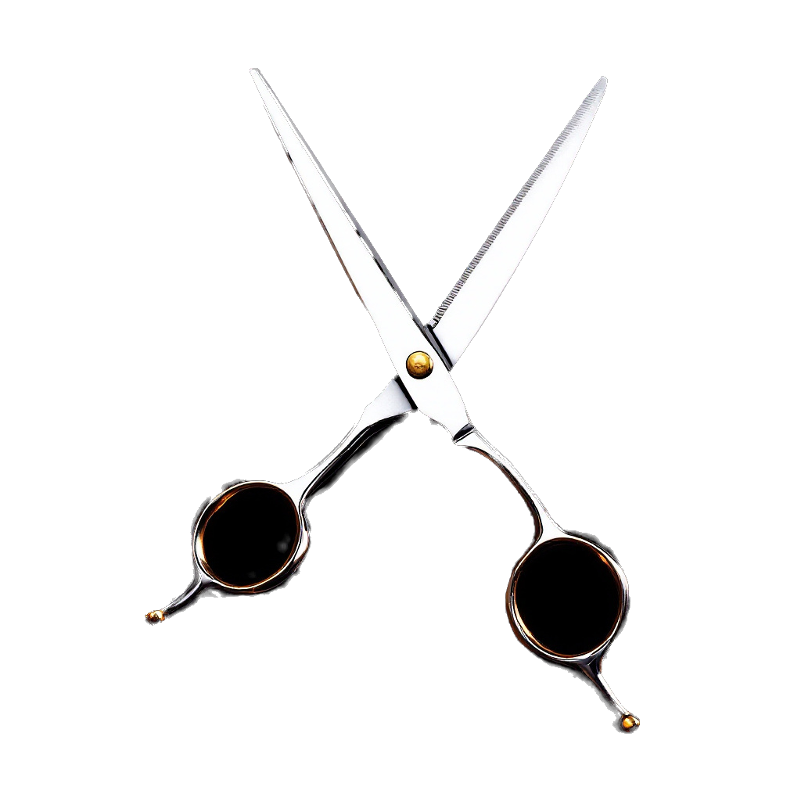

Kapsalon · Wijchen
Een goede kapper in Wijchen. We werken met en zonder afspraak.
Scroll
01 · Zo werkt het
Wanneer het jou uitkomt. Reserveren hoeft niet.
Even zitten — je bent zo aan de beurt.
Fris geknipt weer de straat op.
02 · Wat klanten zeggen
118 Google-reviews · Milano Centrum
143 Google-reviews · Milano Zuiderpoort
Cijfers rechtstreeks van Google, juli 2026.
03 · Twee zaken in Wijchen
Spoorstraat 27, 6602 AV Wijchen
Zuiderpoort 19B, 6605 HM Wijchen
04 · Prijzen